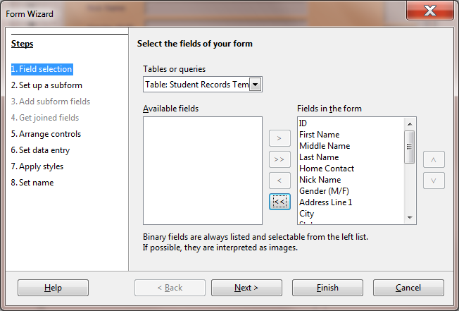
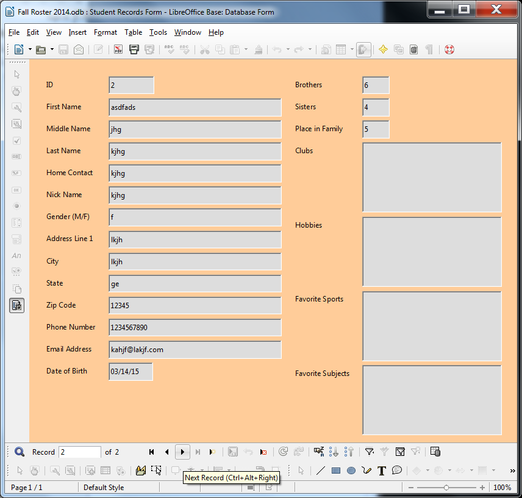

Lesson 6 Introduction to the BASE database¶
6 Introduction to the BASE DATABASE
Keeping student records
LEARNING OUTCOMES
This tutorial will introduce you to the following:
• the general idea behind a database
• planning a new database
• creating a database template
• adding records to a new or existing database
• viewing the data in a database
• clearing entries and records from a database
• making a backup copy of a database
BEFORE YOU BEGIN
Setting up for the tutorial
If you completed Lesson 1 of these tutorials, you can skip the rest of this section and proceed directly to the next section (6.1 An Overview of the Database Concept—next page). If you did not complete Lesson 1, then you must do this now, before proceeding with the rest of Lesson 6.
The set of Work Files for LibreOffice ideally should be stored on a Flash drive (USB drive) in three folders named Base Files, Impress Files, and Miscellaneous Files. You need to create a fourth folder for the data files that you will be creating while working your way through the tutorials. This fourth folder will be called Data Files.
Here are the steps to prepare these folders now before proceeding with this tutorial.
First, Unzip the set of Work Files for LibreOffice by double clicking on the File name on your computer (your instructor will help you with this if you are working with a class) and Extract them onto your flash drive
Double click on the Work Files for LibreOffice folder to open it
Now, inside the Work Files for LibreOffice folder you need to create a new, fourth, folder called Data Files. Here’s how you do this.
In the Work Files for LibreOffice folder, select New Folder (Fig. 6.1).

Fig. 6.1 Creating a New Folder
The system will create a new folder for you and then wait for you to give it a name of your choice (Fig. 6.1 above).
Call the new folder Data Files
During the course of these tutorials you will be storing many files in this Data Files folder.
6.1 AN OVERVIEW OF THE DATABASE CONCEPT
How is a database organized?
Base is an object-oriented relational database management system. It is designed to help an organization—such as a company or an institution or a school or school district, and also the individual teacher—to collect, organize, manage, and store data in such a way that they can be easily accessed and made available to users in a variety of useful ways.
The various types of database objects that you can create using Base are listed in the Database Objects menu in the left hand frame of any LibreOffice database that you open, as illustrated in Fig. 6.2.
Fig. 6.2 The Base database objects
Let’s take a look at each of these objects now to see how they can be used to help you organize and access the information collected into a database (in this case a database of information about different birds).
A Table is the fundamental object in a relational database and
tables use rows and columns to present the data—rather like a spreadsheet. You will learn about Tables and in this lesson, as well as how to use the Design View to create a table, add fields to a table, and define the type of data that is in a specific field.
A Query makes a request to the database, asking it to find some
specific data that are stored in the database. You will learn more about queries in Lesson 7.
A Form gives the user another way of looking at the data in
the database. Whereas a Table allows the user to view many records at once, a Form displays the contents of just one record at a time. Forms are very useful for entering data into new records or updating the data in existing records. You will learn about Forms in this lesson.
A Report is used to present a selected set of information from a
database in a format that is neatly laid out and thus easier for the user to mentally digest. You will learn about reports in Lesson 7.
Base database terminology
A Base database is able to contain thousands, hundreds of thousands, even millions of records. Records contain fields. Each field contains entries made up of text and numbers, which are the basic building blocks of data.
6.2 LET’S TAKE A LOOK AT AN EXISTING BASE DATABASE
It will be useful for you at this stage to see an actual Base database.
Open LibreOffice > Base Database
Base presents you with the Database Wizard dialog box (Fig. 6.3).
Fig. 6.3 The Database Wizard dialog box
This Wizard will step you through the process of either creating a new database or opening an existing database or even connecting to an existing database online.
Since you haven’t yet opened any Base files, you are offered the opportunity to Create a new database. But instead you are going to open a database that has already been created for you to work with in this first section of the tutorial.
So, as illustrated in Fig. 6.3 on the previous page, click on the radio button next to Open an existing database file, then click on the Open button
This brings up the Open window.
In the Open window, navigate to your USB drive > Work Files for LibreOffice folder > Base Files folder and double click on the Birds database to Open it
In the Birds database dialog box you see the icons for the LibreOffice Base database objects (Tables, Queries, Forms, and Reports), which are listed one of top of the other in the Database menu on the left side of the Birds database window (Fig. 6.4).
Fig. 6.4 How do you want to view the data in the database?
One way to view the data is as a Table, where the data for all the records in the database are displayed in columns or as a list—much like in a spreadsheet (Fig. 6.5).
Fig. 6.5 The Table View of the database
In the upper left corner of the Table window, in the window’s Title bar, you see the Table name—Bird Sightings Table (Fig. 6.5 previous page).
In the lower left of the Table window are tools for you to access specific records in the database (Fig. 6.6).


Fig. 6.6 Navigation tools in the Base database
There are 50 records in the Birds database. The field names (Common Name, Family, Size, etc.) are at the top of each column of data (Fig. 6.5 previous page). As you can see, the screen is not big enough to allow you simultaneously to see all the records in the database. If you want to scroll through the records or look at any specific record, you have several options.
You can use the scroll bar on the right of the screen to scroll through the records.
Try this now
To move one by one through the records, you can click left or right on the arrows in the navigation tools in the lower left of the window (Fig. 6.6 above).
Try this now
To go directly to a specific record, you can select the number of the record you want to view by typing the number of that record in the small data entry box to the left of the arrows (Fig. 6.6).
Try this now to select record 12 (type the number 12 in the box then hit Enter) and you’ll see a small green arrow head pointing at the record #12 in the database table (it’s a bird called a Pintail)
6.3 planning A NEW DATABASE
So much for the nuts and bolts of databases. You are now ready to get your feet wet planning your own database of student records.
Click on the Table’s File menu and select Close to close the Bird Sightings Table, then in the Birds Database File menu select Close again
Points to ponder when planning a database
There are three rules of database design:
Rule 1—Plan;
Rule 2—Plan;
Rule 3—Plan!
The more complex the data, the more you need to plan. But even the simplest database should be thought through on paper before being created in Base. Poor planning often results in a database that fails to meet longer term needs.
So think about your database ahead of time—and PLAN!!
6.4 CREATing the DATABASE TEMPLATE
You are going to start a new database for Student Records, which initially will be a template for a database of student records because it won’t contain any actual records right away. This way you’ll be able to use this template database for future groups of students you may have.
Open LibreOffice > Base Database then, in the Database Wizard which pops up on the screen, make sure the radio button next to Create a new database is on and click on **Next
** (Fig. 6.7)
Fig. 6.7 Starting a new Base database
There’s no need to register the database, so click on the radio button next to No, do not register the database, leave the check mark in the box next to Open the database for editing, then click on the Finish button to save the new database
In the Save As dialog box which pops up, navigate to your USB drive > Work Files for LibreOffice folder > Data Files folder and create a New Folder with the name Database Documents
Double click on the Database Documents folder to Open it, then, in the File Name data entry box, type the file name Student Records Template and click on Save
Base now displays the newly created Student Records Template database (Fig. 6.8).
Fig. 6.8 The new Student Records Template database
Notice, in the Database frame on the left side of the Base window, that the Tables object is selected (highlighted in blue). A Table is the default object in a new Base database. To the immediate right of the Database frame, in the Tasks frame, there are three options, the first of which is what we want.
Click once on the Create Table in Design View option (Fig. 6.8 above)
Immediately you are presented with the Table Design dialog box (Fig. 6.9)
Fig. 6.9 Table Design dialog box, waiting for you to till out Field entries
On the screen, Base is waiting for you to begin typing in the field names. Before you enter the field names, however, read what follows.
Editing field names Remember, you’re building a template so that you can use it for other student record databases at a future date. You can easily change, add or delete fields at any time, though the purpose of planning is to try your best to avoid having to make significant changes after the database has been created.
Selecting the data type of a field As illustrated in Fig. 6.9 (previous page), after typing in the field name in the first column, you’ll need to enter the field’s data type in the second column. Table 6.1 below has all this information, too.
Entering field names for the database
Table 6.1 contains the complete list of field names for the Student Records Template database.
Field Name > Field Type Required Length Format Example First Name > Text Yes 15Middle Name > Text Yes 15Last Name > Text Yes 15Home Contact > Text Yes 30Nick Name > Text No 15Gender > Text Yes 6Address Line 1 > Text Yes 50City > Text Yes 25State > Text Yes 2Zip Code > Text Yes 10Phone Number > Text No 12Email Address > Text No 40Date of Birth > Text Yes - January 1, 1998 Brothers > Number Yes 2Sisters > Number Yes 2Place in Family > Number Yes 2Clubs > Memo No -Hobbies > Memo No -Favorite Sports > Memo No -Favorite Subjects > Memo No -
Table 6.1 Template Field Name listing
You’ll be referring to this Table frequently as you work your way through the next several pages, so you might like to bookmark Table 6.1 in order to easily find the Table whenever you need to.
Type only the Field Names that appear in the first column of Table 6.1 (there are 20 field names in all). The second column tells you what Data Type to choose (from a drop down list that pops up when you click on the down arrow at the right side of the entry box.
The other columns in the table (Required, Length, and Format Example columns) are there to help you as you enter each field name and data type and explain whether data is to be “Required” for that field and what size (in text characters) and format the field is allowed to be.
Now you’re ready to begin entering the data listed in Table 6.1 above into the Table Design dialog box
Click in the first entry box in the Field Name column, then type First Name for the field name (Fig. 6.10)
Fig. 6.10 Field Properties and Help
Notice that, in the lower right section of the Student Records Table window (Fig. 6.10 above), Base provides help to guide you as you enter the data for each part of each field. Read this help as you go along. In the lower left you can see the Field Properties dialog area.
If you take a look at Table 6.1 on page 176, the Length column specifies the number of characters required for several of the fields in the database.
Check Table 6.1 to find out whether an entry is required for the First Name field (the answer is Yes) and the correct size for the First Name field (the answer is 15 characters)
Now, look down at the lower left corner of the Table Design window (Fig. 6.9 again), where you can see a list of Field Properties, along with data entry boxes to specify whether an entry is required, the entry’s Length, Format example, and so forth
In the Entry Required box select Yes, and in the Length box type 15 (so as to allow up to 15 characters for the First Name)
Hit the Tab key to move the cursor over to the Field Type column, click on the down arrow to the right of the box and select Text [VARCHAR] as the data type
Now click in the second Field Name box (below the First Name box) so you can enter the next database field name
Enter the field names Middle Name (15 characters), Last Name (15 characters), Home Contact (30 characters), in each case making sure you have Yes in the Entry Required Field Property for each of these fields
Now enter the field name Nick Name (15 characters), but leave No in the Required Field Property box, since a Nick Name is optional
Next enter the following field names, in each case making sure you have Yes in the Entry Required Field Property for each of the fields:
Gender (M/F) (1 character)
Address Line 1 (50 characters)
City (25 characters)
State (2 characters)
Zip Code (10 characters),
Now enter the field name Phone Number (12 characters), and Email Address (40 characters) but leave No in the Required Field Property box in case a student’s family does not have a phone or email address
Using a Format example to control the format for a field
You want to make sure that certain fields have a consistent format, such as the Date of Birth field, which is next in the listing in Table 6.1 on page 176, you want to select [DATE] as the data type for the field, and select a Format example for it, too.
Here’s how you do this.
Enter the next field name Date of Birth, then in the Field Type column click on the arrow to bring down the menu of Field Types
Select the Field Type Date [Date] then, in the Field Properties area click on the ellipses at the end of the Format example option (Fig. 6.11)

Fig. 6.11 Click on the ellipses to specify a Format example for the Date of Birth field
In the Format tab > Category select Date, then under Format select the option (December 31, 1999) highlighted in Fig. 6.12
Fig. 6.12 Selecting a Format example in the Field Format dialog box
The remaining fields in the database (Clubs, Hobbies, Favorite Sports, and Favorite Subjects) will all be Memo data type to allow the user to type a longer entry if desired. Notice, in the Table on page 188, that data entries for these memo fields are optional, so No will be the answer to Entry required.
For each of the last four database field names (Clubs, Hobbies, Favorite Sports, and Favorite Subjects) select the Field type Memo and select NO for Entry required
When you have completed the entries for all 20 field names, select File > Save As… (Fig. 6.13), and, in the Save As dialog box type the name Student Records Table and click on OK

Fig. 6.13 Naming the Table
Whenever you attempt to save a new LibreOffice Base table for the first time, you are asked to define a Primary Key for the Table (Fig. 6.14).

Fig. 6.14 Prompt to define a Primary Key
So what is a Primary Key in a database?
The purpose of a Primary Key is to enable easy manipulation of the data across multiple database objects. If, for example, you were designing a database for an administrative application in the Principal’s or Superintendent’s office, or for a sizable company, this would be an important consideration, because your database would be large, and there would be many ways of looking at the data in the database (called “views” on the data) represented by different tables.
Click on Yes to tell Base that you do need a Primary Key field in the database, then go to File > Close to close the Table Design window
6.5 COMPLETING PREPARATION OF THE DATABASE TEMPLATE
Creating a Form for the new database
The following exercises will help you learn how to prepare a database Form.
A Form is a database object which allows you to view the data one record at a time, unlike a Table where you can view the data as a continuous list of records—recall how the Table looked in the Birds database you checked out at the beginning of this tutorial.
A Form is a convenient tool for data entry purposes because it allows the user to see all the Field entries in a single record at one time, unlike the Table view, which will often be unable to show all the data fields of a single record across the screen.
Let’s create a Form for our Student Records Template database now. First you need to bring up the Create Ribbon at the top of the database window.
Click on the Create tab to show the Create Ribbon at the top of the Base window and, in the Forms group, click on the Form Wizard dialog box (Fig. 6.15)

Fig. 6.15 Step 1 in the Form Wizard dialog box
As you see in Fig. 6.15 above, the Form Wizard dialog box steps you through the 8 step process of creating a Form for the Student Records Template database. Not all of the 8 Steps are relevant for our purposes, but most of them are. Step 1 in designing a new form for the Student Records database is devoted to selecting all the fields for the new Form.
In the “Select the fields of your form” section (see Fig. 6.15 above), click on the double arrow (>>) symbol
This moves all 20 of the fields in the Student Records Template database—that is to say, All the Available fields—over to the Fields in the Form box (Fig. 6.16).

Fig. 6.16 The result of Step 1 in the Form Wizard dialog box
Step 2—Set up a Subform—this is irrelevant to our purposes in this tutorial, as are also Steps 3 and 4, so just click on Next and Next to move on to Step 5, where you decide on the design controls on your database Form (Fig. 6.17)

Fig. 6.17 Selecting the Arrangement of the main form
Step 5—select the first of the four Arrangements of the main form (Columnar – Labels left)—Fig. 6.17 above
In Step 6, accept the default data entry for the Form to Display all data and click on Next to go to Step 7, where you can choose any color and border you like for the Form Style (Fig. 6.18)
Fig. 6.18 Selecting the Style for the Form background
All that remains—Step 8—is to name the Form (Student Records Form) and make sure the radio button next to Work with the form is selected, then click on Finish (Fig. 6.19)


Fig. 6.19 Naming the database Form
Base finally presents the Student Records Database window, ready for you to start filling out the individual records with student data (Fig. 6.20)

Fig. 6.20 The final look of the Student Records Database form
6.6 adding records to A NEW or existing DATABASE
Creating a new database based on a Template database
The Student Records Template is so named because you want to use this same template document (with its table Student Records Table) and data entry form (Student Records Form) over and over for class records in the years ahead.
Before you start adding data about this year’s students, you need to create a new database using this template as the model. For the sake of this exercise, you’re going to call the new database Fall Roster 2015 (or some other appropriate name if you prefer). The name indicates that the document will contain the database of student records for a Fall 2015 class.
The Template database should still be displayed on your screen. All you need to do is Save the template with the new name Fall Roster 2015 and you’re ready to add the data for the new class of students.
In the File menu select Save As… and, in the Save As dialog box, type the file name Fall Roster 2015 and click on the Save button
Entering the data for the records in the database
The Fall Roster 2015 database is open on your screen, so click in the left hand frame on Forms then, in the Forms frame, double click on Student Records Form to open it
Remember that each record in the Fall Roster 2015 database has a full set of 19 entries for each student. You must enter a few records at this stage (five will do for now) so that you can complete the rest of this tutorial.
Begin by selecting the ID field for record #1 and enter the number 1 as the Primary Key for the record (the next record will have the Primary Key of 2, and so on—the Primary Key field must be unique) and hit the Tab key to move to the next field’s data entry box—the First Name field of record #1
Type in a First Name of a hypothetical student
The names don’t have to be in any particular order since you can quickly sort them later on. Check the name you just typed. Is it correct?
If so, hit the Tab key again to proceed to the next field (you’d press Shift-Tab if you wanted to move to a previous field)
Notice that the data are now stored in the data entry box for the First Name field in Record #1. If you wanted to correct the data, you would do so by clicking in the data entry box and then make any changes as if you were in the word processor.
Continue entering data for Record #1 (the data for the first student in a class roster); make up the data as you go along if you don’t have actual students in mind
Adding a New Record to the database
After you type the last field entry for each record, press Tab, and Base will automatically present a new record Form
Base will also automatically save each completed record into the database on your disk, so you don’t have to worry about losing your work as you go along, and you also won’t need to save the database at the end.
Type the entries into each field one by one, starting with the ID field which will contain the next number in sequence—2, if it’s the second record and so on; be sure to press the Tab key after each entry to get to the next field (eventually you should have at least 5 records in the Fall Roster 2015 database)
Adding a record to an existing database is just the same. New records are always added at the end of the database. If you want the new record to appear in a specific place in the Datasheet view you would use the Sort function. You’ll learn how to do this in Lesson 7.
The new record will always have the same layout and format characteristics as the others in the database. Also, remember that Base automatically saves a new record in the database after you have filled in the data for every entry.
6.7 VIEWING THE DATA IN THE DATABASE
Here are some of the ways to move about in a database. Base makes it easy for you to get around. Take a few moments to move from field to field and from record to record. Try these exercises.
Click anywhere in the data box next to a field name
This allows you to edit or add data if needed.
Hit the Tab key to move to the next field in the same record
To move to the same field in the next or previous record, click on the left or right arrows in the Navigation tools at the bottom of the Form window (Fig. 6.21)
Fig. 6.21 The Base database navigation tools
In Lesson 7 you will learn other ways of searching through the database, along with other ways of selecting sets of records from the database, and so forth. For now, as a final exercise in Lesson 7, let’s just learn how to update the data in a Base database.
6.8 UPDATING ENTRIES AND records IN the DATABASE
The following exercises will give you the opportunity to practice working with the data in the database.
Updating the contents of a field (one item of data in a student record)
You should still be looking at the Student Records Form
To delete, or otherwise change, the contents of a field in a record, click on the field data entry box, then erase characters or words in the same way as you would if you were in the word processor.
Deleting (clearing) a record
In order to delete a single record from a database, you need the Form Navigation toolbar, which should already be open at the bottom of the database Form, along with the other toolbars relevant to a Base database Form (Fig. 6.22).

Fig. 6.22 The Form toolbars
If these toolbars are not available in the Fall Roster 2015 database Form, go to the View menu > Toolbars and make sure you select each of the Form toolbars in turn—the Form Controls toolbar, the Form Design toolbar, and the Form Navigation toolbar (click to put a check mark next to each of them, as illustrated in Fig. 6.21 on the previous page)
Now try this to practice deleting a record from the database.
In the Navigation toolbar (the upper of the two toolbars at the bottom of the Form window), click on the record control tools to select Record #2 in the Fall Roster 2015 database (Fig. 6.23)
Fig. 6.23 Selecting a specific record in the database
In the Navigation toolbar, click on the Delete Record tool
Base will warn you that you are about to delete a record (Fig. 6.24).
Fig. 6.24 Alert to inform you that deleting a record is undoable
This gives you the opportunity to change your mind, which you need to do in this case. Base will otherwise immediately permanently remove the record if you click on Yes.
Click on No in the dialog box
Deleting several records at once
It’s easiest to use the Table View to clear several records that are listed next to each other. To delete a block of records at one time here’s what you do.
In the File menu select Close to close the Fall Roster 2015 database Form, then, in the Database frame on the left hand side of the Fall Roster 2015 window, click on the Tables icon, and then double click in the Tables section on Student Records Table
Now, in the left hand margin of the Table, click to select Record #2, then hold down the Shift key while you click in the left hand margin to select Record #4 (Records 2, 3, and 4 should now be highlighted—Fig. 6.25)
Fig. 6.25 Selecting several records for deletion
In the Navigation toolbar, click on the Delete Record tool

Again you will get a warning (see Fig. 6.24 above) that you are about to delete however many records you have selected, and will ask you if you are sure you want to do this.
You don’t, so click on No in the dialog box
Bear in mind that the Delete Record command completely removes a record, such that it is irretrievable once deleted.
SKILL CONSOLIDATION
Complete these exercises to reinforce what you have learned in Lesson 6.
1. Design and create a database for the names, addresses, and telephone numbers you have in your address book. Enter as many names and addresses as you like (as long as you have at least 6). Don’t forget to save the database records as you go along.
2. Add a couple of records to the database you created in exercise 1. Clear a record.
3. Add a field to the address book database—say Association (how are the people associated to you—friend, colleague, etc.). Then enter the data for each record for the new field.
4. Imagine you are teaching a class and you want your students to do research on a topic. Design and create a database around that topic. You could discuss the fields with your students. The students would then go off, do the research, and enter the data into the database as a basis for a paper they must prepare. This would be a nice group (team) exercise.
5. Design and create a database for a Birthday List of your family and friends. Include fields such as Name, Birthday, Greek sign, Favorite color, Clothes sizes, Hobby, etc. Have at least 6 records in the database, with each record containing at least 5 fields. Create a Form for the database as well as a Table.
6. Open the Base database Fall Roster 2015 and enter a complete new record for a student named Jane Doe.
7. Open the Base database named Template. Change the name to Grade X.2015 so you won’t lose the template, and add three (3) records. Then save the updated database.